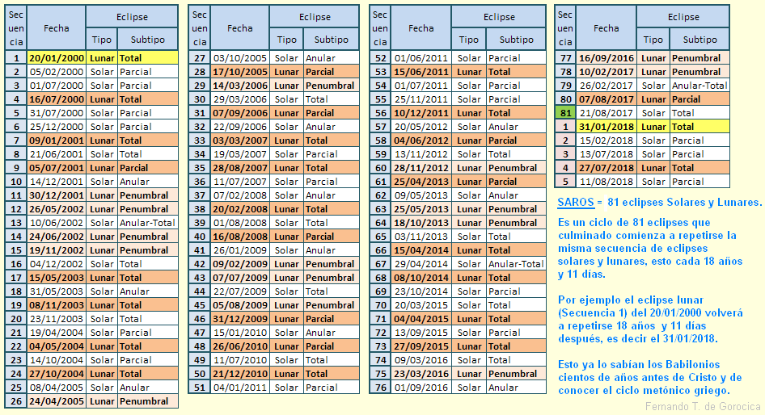

The saros is an astronomical period of approximately 6,585.3 days (18 years, 11 days, and 8 hours) after which the Sun, Earth, and Moon return to nearly the same relative positions, causing a nearly identical eclipse to recur. It has been the main tool for eclipse prediction since ancient times.

Fernando de Gorocica / Wikimedia Commons, CC BY-SA 3.0
{kind=link}
Why It Works
The saros arises from a near-coincidence among three lunar cycles. After 223 synodic months (6,585.32 days), the Moon returns to the same phase: new for a solar eclipse, full for a lunar eclipse. After 242 draconic months (6,585.36 days), it returns to the same position relative to its orbital nodes, the points where its orbit crosses the ecliptic. And after 239 anomalistic months (6,585.54 days), it returns to roughly the same distance from Earth, and therefore the same apparent size in the sky. Because all three periods nearly line up, the Moon repeats its phase, its nodal position, and its apparent size after each saros, producing a very similar eclipse each time.
Geographic Shift and Saros Series
The saros does not contain a whole number of days. The leftover 8 hours means Earth rotates an extra third of a turn between one eclipse and the next, so each successive eclipse falls roughly 120° westward in longitude. Three saros periods (about 54 years and 34 days, a span called the exeligmos) bring the eclipse back to nearly the same part of the globe, since three 8-hour shifts add up to a full day.
Successive eclipses in a saros series also drift slowly in latitude. A series starts with partial eclipses near one pole, moves through central eclipses (total, annular, or hybrid for solar; total for lunar) across middle latitudes, and ends with partial eclipses near the opposite pole. A complete series spans 1,226 to 1,550 years and produces 69 to 87 eclipses. About 40 solar and 41 lunar saros series are active at any given time.
A complementary cycle, the inex, spans 358 synodic months (approximately 29 years). The inex connects eclipses across different saros series at the same node. Together, saros and inex allow all solar eclipses to be mapped in a grid known as the Saros–Inex Panorama.
History
Babylonian astronomers recognised the saros in the last centuries BCE by carefully recording eclipse recurrences, long before gravitational theory existed. The ancient Greek Antikythera Mechanism (c. 150–100 BCE), a hand-powered computing device, built the 223-month cycle into its gearing to predict eclipses. The name "saros" was given to the cycle by English astronomer Edmond Halley in 1686, borrowing a word from the Suda, an 11th-century Byzantine encyclopaedia that defined it as "a measure and a number among Chaldeans." Halley used the cycle to predict the total solar eclipse of 3 May 1715, visible from London, to within 4 minutes of the correct time.